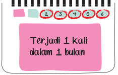
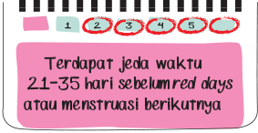
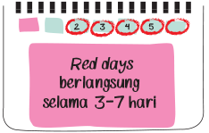
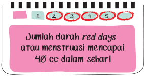
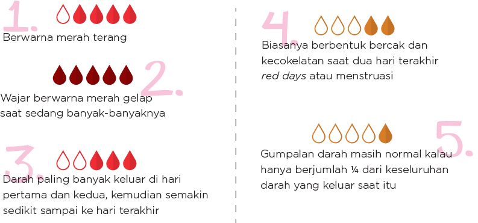
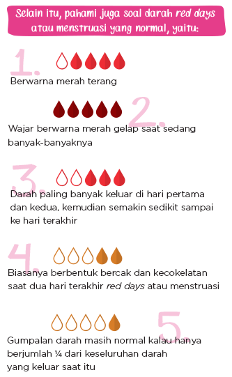
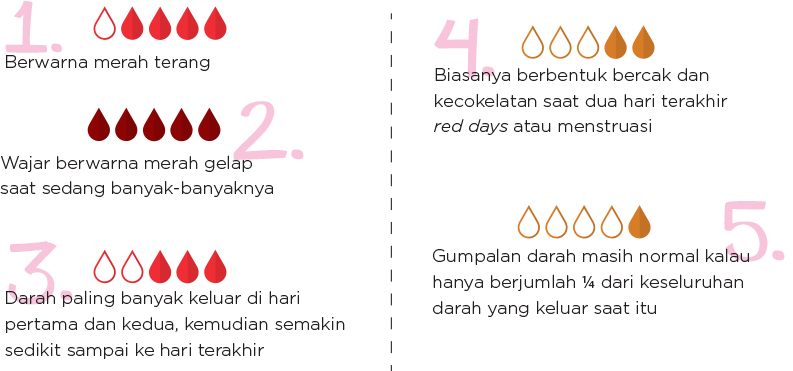
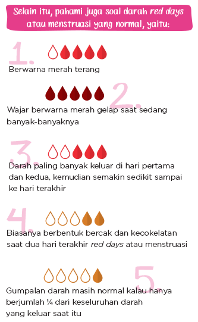

Apa Itu Red Days?
Red Days alias menstruasi merupakan proses keluarnya darah dari dalam rahim karena lapisan dinding rahim yang mengandung pembuluh darah luruh akibat enggak dibuahi.
Sebulan sekali, kita pasti mengalami. Gatal, perut sakit, pinggang pegal, dan berbagai keluhan lainnya kadang kita rasakan pada saat red days alias menstruasi. Walaupun setiap bulan mengalaminya, apakah kita sudah tahu betul apa yang terjadi di dalam tubuh? Atau bagaimana menjaga kebersihan ketika red days tanpa mengalami infeksi? Soalnya, di masa ini tubuh jadi rentan terhadap infeksi yang berbahaya bagi kesehatan vagina.
Meski kenyataannya hanya 1 dari 25 cewek yang enggak tahu kalau risiko infeksi pada vagina meningkat saat red days atau menstruasi, tapi masih sedikit yang benar-benar paham bagaimana cara menjaga dan membersihkan vagina ketika red days atau menstruasi dengan benar.
Sebelum lebih jauh memahami kenapa kita rentan mengalami infeksi, kita harus paham dulu apa yang terjadi di dalam tubuh kita ketika red days atau menstruasi.
Red Days alias menstruasi merupakan proses keluarnya darah dari dalam rahim karena lapisan dinding rahim yang mengandung pembuluh darah luruh akibat enggak dibuahi.
Menurut dr. Mery Sulastri, Trainer & Educator PT. Mundipharma Healthcare Indonesia, ada empat poin penting yang harus kita pahami soal siklus red days atau menstruasi:
|  |  |
|  |  |
“Masa red days alias menstruasi setiap orang berbeda karena masing-masing orang punya hormon yang berbeda. Hormon dapat dipengaruhi oleh tingkat stres dan berat badan. Kalau red days atau menstruasi ini berlangsung selama lebih dari 7 hari, terjadi lebih dari satu kali dalam satu bulan, atau malah enggak mengalami menstruasi atau red days dalam satu bulan, periksakan diri ke dokter,”
------ dr. Mery. -----------------------------------------------------
Pada saat red days alias menstruasi, kondisi tubuh memang berubah. Enggak heran kalau kita sering merasa pegal atau mulas. Begitu juga dengan perubahan mood. Hal ini normal kok, girls.
Meski kita sensitif banget dan gampang marah, jangan sampai perubahan psikis ini malah memengaruhi kegiatan sehari-hari. Biar enggak sensi, kita bisa melakukan hal ini:
Sebenarnya, di dalam vagina ada bakteri baik yang berfungsi melindungi vagina dari ancaman bakteri jahat penyebab infeksi, yaitu vaginal flora. Kehadiran bakteri baik ini mampu menjaga keseimbangan pH vagina, yaitu tingkat keasaman di vagina.
“pH vagina normal adalah dengan keasaman 3,8-4,5. Level asam pH berguna untuk melindungi vagina dari bakteri atau jamur penyebab infeksi. Saat red days atau menstruasi, kadar pH di vagina berubah, sehingga rentan diserang bakteri atau jamur.”
------ dr. Mery. ----------------------------------------------------------------------------------
Saat red days alias menstruasi, vagina jadi lebih lembap dan bakteri jahat lebih mudah berkembang biak. Akibatnya, vagina jadi mudah terkena infeksi dan berbagai penyakit seperti:
Karena vagina jadi rentan terhadap infeksi saat red days atau menstruasi, penting bagi kita untuk menjaga kebersihannya. Salah satunya dengan rajin mengganti pembalut agar enggak timbul infeksi pada vagina. Kita dianjurkan mengganti pembalut setiap 3-4 jam sekali.
“Mengganti pembalut setiap 3-4 sekali untuk mencegah vagina agar enggak lembap. Area vagina yang lembap akan membuat bakteri dan jamur lebih mudah berkembang biak.”
------ dr. Mery. ---------------------------------------------------
dr. Mery juga menyarankan untuk memilih pembalut dengan daya serap yang tinggi supaya enggak bikin vagina jadi makin lembap. Hindari menggunakan pembalut yang mengandung wewangian. Pembalut yang mengandung wewangian dapat menyebabkan alergi, terutama pada kita yang punya kulit sensitif.
Dari 150 responden cewek Indonesia berumur 13-20 tahun yang mengisi polling cewekbanget.id, lebih dari 50% tahu bahwa waktu yang tepat untuk mengganti pembalut adalah setiap empat jam. Tapi pada kenyataannya mereka enggak melakukannya.
“Aku biasa ganti pembalut 3-4 kali dalam sehari,
soalnya risih kalau terlalu lama dipakai.”
------ Cici, 17 tahun, MAN 4 Kediri -------------------
“Sebenarnya jarang mengganti pembalut karena ada rasa enggak nyaman kalau menggantinya di luar rumah, misalnya di tempat umum yang toiletnya kotor.”
-- Sidney, 20 tahun, Fakultas Hukum Universitas Indonesia --
“Enggak nyaman rasanya kalau ganti pembalutnya enggak di rumah. Apalagi kalau di sekolah, meski toilet sekolahku bagus, tapi tetap aja rasanya risih dan ribet.”
-- Muthia, 18 tahun, Pekanbaru -------------------------------
“Aku sih biasanya pakai air aja, soalnya lebih alami dan enggak ribet dan lebih mudah didapat.”
-- Nabila, 19 tahun, Surabaya ----------------------------
“Aku membersihkan vagina menggunakan sabun mandi, soalnya praktis karena bisa sekalian dilakukan sambil mandi.”
-- Vita, 16 tahun, SMA Don Bosco 1 -----------------------------
Menurut dr. Mery, mencuci vagina memang harus menggunakan air bersih. Namun, kita bisa menggunakan sabun khusus kewanitaan untuk hasil yang lebih maksimal. Soalnya, sabun kewanitaan dapat membantu dalam mencegah dan mengatasi infeksi di vagina.
Apalagi kalau sedang red days atau menstruasi, mencuci vagina dengan air saja kadang enggak cukup untuk membunuh bakteri jahat. Karena itu, kita membutuhkan sabun khusus kewanitaan untuk terhindar dari infeksi.
Tapi, harus hati-hati, nih, dalam memilih sabun khusus kewanitaan. dr. Mery menekankan beberapa hal yang harus diperhatikan dalam memilih sabun khusus kewanitaan dan cara menggunakannya, yaitu:
 


